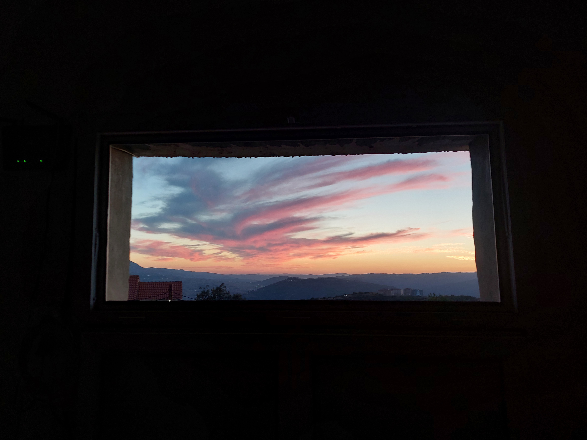

Les jours trop lourds
Il y a des matins
où se lever
est déjà une victoire.
Le réveil sonne.
Le corps dit non.
Le café refroidit
sur la table.
On répond « ça va »
avec cette petite voix
qui a appris à mentir.
Personne ne voit
les fissures sous la chemise.
Personne ne sait
combien de fois
on s'est effondré
sans faire de bruit.
Alors aujourd'hui
je ne serai pas fort.
Je serai humain.
Je poserai mes peurs
sur le bord du lit.
Je laisserai mes larmes
avoir leur propre langage.
Et si le monde attend de moi
que je coure encore,
je lui dirai doucement :
pas aujourd'hui.
Aujourd'hui,
je respire.
Et c'est déjà
beaucoup.
Djamel Metref
At Yenni le 18 Août 2026
← Tous les poèmes
Les jours trop lourds
Angoisse et solitude · Résilience et espoir